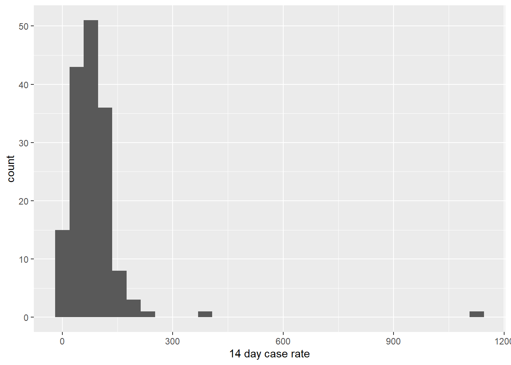
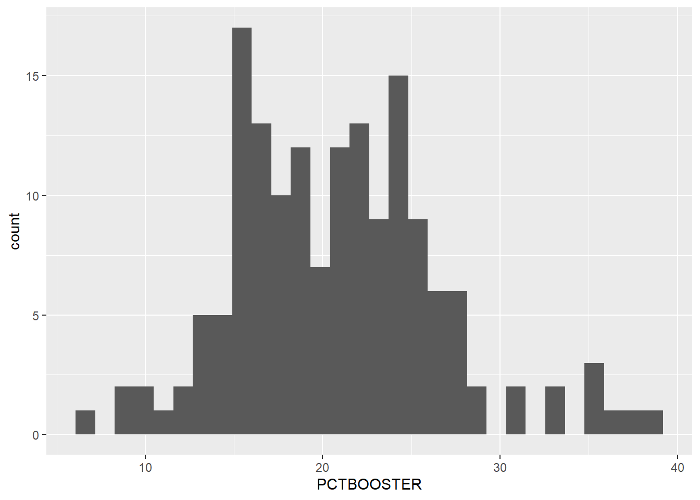
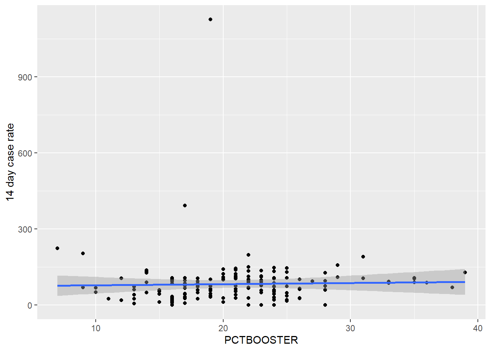
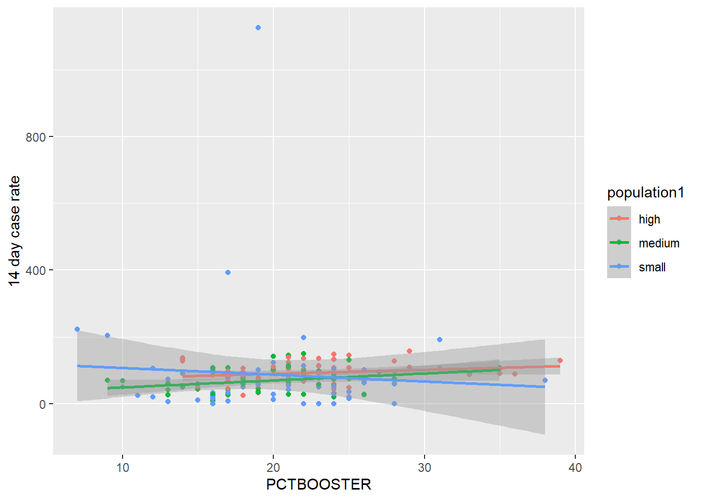

#load packages
library(here)
library(dplyr)
library(ggplot2)An example exploratory analysis script
This Quarto file loads the cleaned data and does some exploring.
Setup
Load the chunk so we can pull in R script
Load the packages
Load the data.
#Path to data. Note the use of the here() package and not absolute paths
data_location <- here::here("data","processed_data","processeddata.rds")
#load data
mydata <- readRDS(data_location)Data exploration through tables
Showing a bit of code to produce and save a summary table.
summary_df = skimr::skim(mydata[,c('14 day case rate','RTCUMVAXADMIN',
'PCTCUMPVAX',"PCTCUMPCVAX","PCTBOOSTER")])
print(summary_df)-- Data Summary ------------------------
Values
Name ...[]
Number of rows 159
Number of columns 5
_______________________
Column type frequency:
numeric 5
________________________
Group variables None
-- Variable type: numeric ------------------------------------------------------
skim_variable n_missing complete_rate mean sd p0 p25
1 14 day case rate 0 1 83.4 97.3 0 41.8
2 RTCUMVAXADMIN 0 1 127918. 27260. 60435 109456.
3 PCTCUMPVAX 0 1 51.4 9.48 29.6 45.4
4 PCTCUMPCVAX 0 1 46.9 8.88 24.9 41.5
5 PCTBOOSTER 0 1 20.8 5.73 7 17
p50 p75 p100 hist
1 74 104. 1126. <U+2587><U+2581><U+2581><U+2581><U+2581>
2 127981 143319 233717 <U+2582><U+2587><U+2587><U+2581><U+2581>
3 51.5 56.7 92.5 <U+2582><U+2587><U+2585><U+2581><U+2581>
4 47 52.1 83.1 <U+2582><U+2587><U+2586><U+2581><U+2581>
5 21 24 39 <U+2582><U+2586><U+2587><U+2581><U+2581># save to file
summarytable_file = here("results","exploratory", "summarytable.rds")
saveRDS(summary_df, file = summarytable_file)Data exploration through figures
Histogram plots for the continuous outcomes.
‘14 day case rate’ first.
p1 <- mydata %>% ggplot(aes(x=`14 day case rate`)) + geom_histogram()
plot(p1)`stat_bin()` using `bins = 30`. Pick better value with `binwidth`.
figure_file = here("results","exploratory","14_day_case_rate.png")
ggsave(filename = figure_file, plot=p1) Saving 7 x 5 in image`stat_bin()` using `bins = 30`. Pick better value with
`binwidth`.Here we find there are two county which have high ‘14 day case rate’. We want to know which they are.
mydata$county_name[which(mydata$`14 day case rate`>300)][1] "Quitman" "Stewart"mydata$`14 day case rate`[which(mydata$county_name=='Quitman')][1] 392.33mydata$`14 day case rate`[which(mydata$county_name=='Stewart')][1] 1125.8They are ‘Quitman’ and ‘Stewart’ counties. In the previous 14 days/100,000 population, Quitman has 392.33 cases reported, and Stewart has 1125.8 cases reported. Beyond our current research, we should pay attention about what situations make these two counties have such a high level than other counties. Previous 14 days before 01/31/2023.
Now population, RTCUMVAXADMIN,PCTCUMPVAX,PCTCUMPCVAX and PCTBOOSTER. Since last four should be highly correlated. The analysis we will apply later should be same. Our final model should include two predictors which are population and one of these four.
Since the four choices share same statistics steps. We just pick population+PCTBOOSTER as example. I was thinking where could I find a categorical variables. Such as could I make population as ‘small’,‘medium’ and ‘large’. I think we can try both way how we define population. Since there is not other good choice of categorical variable I can find in this dataset. To make the diversity of our predictors. I decide to define population as categorical variables.(However,I am not saying this a better way.)
Now ‘PCTBOOSTER’.
px5 <- mydata %>% ggplot(aes(x=PCTBOOSTER)) + geom_histogram()
plot(px5)`stat_bin()` using `bins = 30`. Pick better value with `binwidth`.
figure_file = here("results","exploratory","PCTBOOSTER_distribution.png")
ggsave(filename = figure_file, plot=px5) Saving 7 x 5 in image`stat_bin()` using `bins = 30`. Pick better value with
`binwidth`.Now ‘14 day case rate’ as function of ‘PCTBOOSTER’.
pf1 <- mydata %>% ggplot(aes(x=PCTBOOSTER, y=`14 day case rate`)) + geom_point() + geom_smooth(method='lm')
plot(pf1)`geom_smooth()` using formula = 'y ~ x'
figure_file = here("results","exploratory","case_BOOSTER.png")
ggsave(filename = figure_file, plot=pf1) Saving 7 x 5 in image`geom_smooth()` using formula = 'y ~ x'Here we find that two outliers make our plot hard to see clearly. We can try another model removing these two outliers. Here I just leave it here to see what our model shows.
Once more cases as function of PCTBOOSTER, stratified by population.
pf2 <- mydata %>% ggplot(aes(x=PCTBOOSTER, y=`14 day case rate`, color = population1)) + geom_point() + geom_smooth(method='lm')
plot(pf2)`geom_smooth()` using formula = 'y ~ x'
figure_file = here("results","exploratory","case_BOOSTER_stratified.png")
ggsave(filename = figure_file, plot=pf2) Saving 7 x 5 in image`geom_smooth()` using formula = 'y ~ x'Notes
Here we can see both the two outliers have small population.